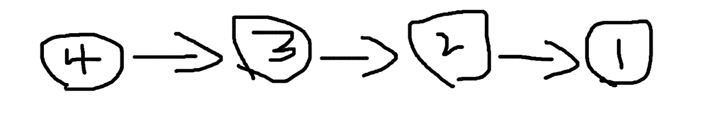
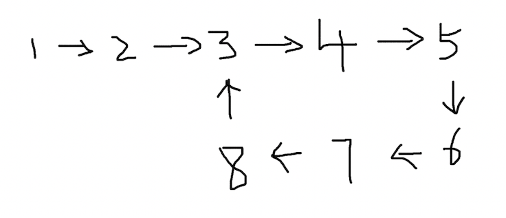
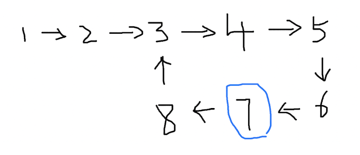
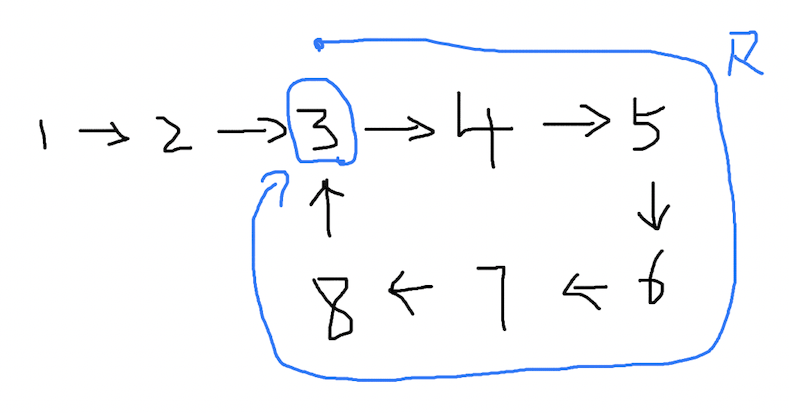
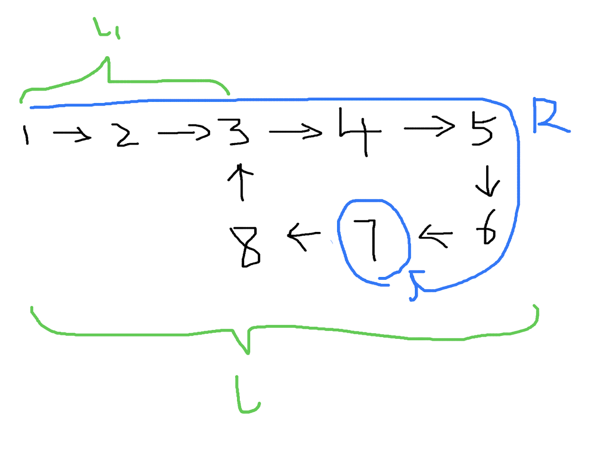
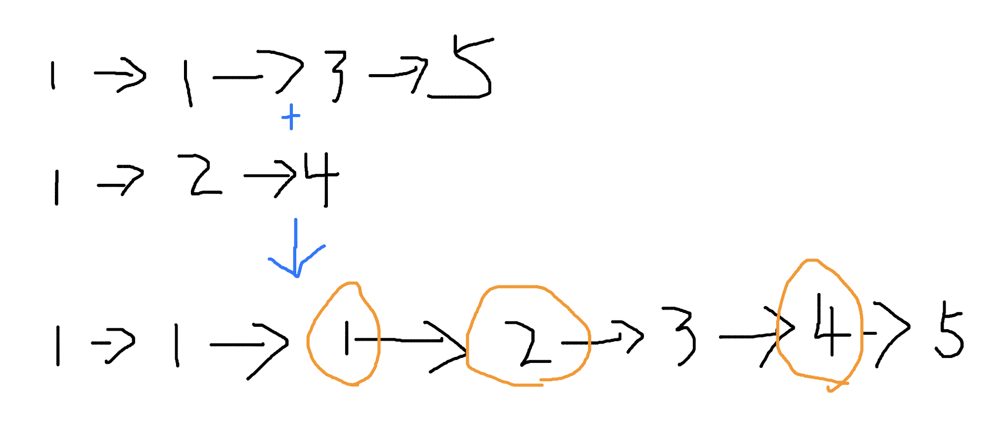
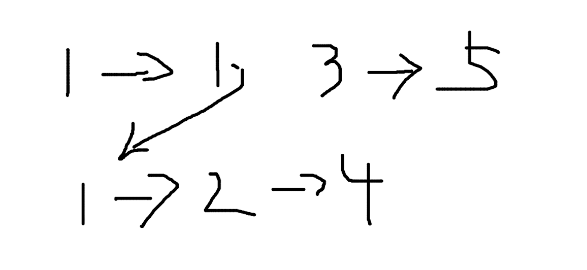

Common Linked List Algorithm Problems and Explanations
Contents:
- Reverse a Linked List
- Detect if a Linked List Has a Cycle
- If the List Has a Cycle, Find the Cycle Entry
- Determine Whether Two Linked Lists Intersect
- If Two Lists Intersect, Find the First Intersection Node
- Merge Two Sorted Linked Lists
Reverse a Linked List
Problem
For a linked list like this:

We want it to become this after processing:
Linked List Structure Definition
Node definition:
type Node struct {
Value int
Next *Node
}
Method to construct a linked list:
func createLinkedList(n int) *Node {
head := &Node{Value: 0}
node := head
for i := 0; i < n; i++ {
if i < n {
node.Next = &Node{Value: i + 1}
}
node = node.Next
}
return head
}
The function returns a pointer to the head of a linked list. We use a pointer instead of the struct type because, due to some of Go’s variable semantics, you can’t determine whether a variable is empty using Node{} == nil. Theoretically, Node{} is not nil. This means if you use Node{} as the head node’s type, you won’t have a reasonable stopping condition during traversal—you’d have to use something like Node{}.Next == nil, which would also miss the last node.
Iterative Reversal
We shouldn’t reverse by directly changing node values, e.g., by storing values in an array during one pass and then writing them back in reverse during a second pass. That defeats the purpose of the data structure. You can use iteration or recursion to reverse the list.
Take the first node as an example: use a temp variable to store the location of the next node before reversal, then set head.Next to point to the node it should point to after reversal. The next of the first node should be the nil node, and the next of the second node should be node 1. After setting head.Next, move head to temp (the original next) to continue traversal. You also need a curr variable to store the position of head before it jumps, so that on the next step head.Next can point back to the previous node. This is a straightforward process.
func reverseLinkedList(head *Node) *Node {
curr := new(Node)
for head != nil {
temp := head.Next
head.Next = curr
curr = head
head = temp
}
return curr
}
- Time complexity: O(n)
- Space complexity: O(1)
Execution
After running, the result matches expectations:
func main() {
head := createLinkedList(4)
head = reverseLinkedList(head)
for head != nil {
fmt.Println(head.Value)
head = head.Next
}
}
Detect if a Linked List Has a Cycle
Problem
A cycle in a linked list means the “last” node points to one of the previous nodes.

When traversing such a list, the program will loop forever. How can we detect whether a list has a cycle?
Analysis
A common approach is the two-pointer technique. Imagine a track: two people A and B start at the same point, but run at different speeds, with A’s speed v1=1 and B’s speed v2=2 (B is faster). As long as they keep running, B will eventually lap A and catch up again—this is intuitive.

On a circular track, a fast and a slow runner will always meet again, and the distances they cover follow this relation:
s2 - s1 = nR
R is the circumference of the circle, and n is a positive integer. At the starting line, n=0; at the first meeting, B has run one full lap more than A, so n=1.
Compared to a linked list, this track scenario is missing an initial straight section before entering the loop. Before entering the circular part, A and B run along a straight path of length d. Their speeds remain unchanged throughout, but when they enter the circle, they are no longer at the same “relative” starting point.

In this case, can s1 and s2 still satisfy a formula? Let the straight distance before the circle be d. Inside the circle, the paths still differ by n times the circumference R, only the expression becomes:
(s2 - d) - (s1 - d) = nR
s2 - d - s1 + d = nR
s2 - s1 = nR
After canceling out d, the result is the same as before.
Since A’s distance s1=v1t and B’s s2=v2t, with the same time t and known speeds v1=1 and v2=2, we have:
s2 - s1 = nR
v2t - v1t = nR
2t - t = nR
t = nR
Taking n = 1 gives t = R.
Solution
Back to linked lists: to detect a cycle, we only need fast and slow pointers; we don’t need to know exactly where they meet, though the distance relation helps validate correctness.
For this list, let pointers A and B start from node 1 at speeds 1 and 2:
Their positions over time:
| Time t | 0 | 1 | 2 | 3 | 4 |
|---|---|---|---|---|---|
| A’s pos | Node 1 | Node 2 | Node 3 | Node 4 | Node 5 |
| B’s pos | Node 1 | Node 3 | Node 5 | Node 3 | Node 5 |
At t=4 they meet; the cycle length is exactly 4, matching t = R.
If the List Has a Cycle, Find the Cycle Entry
Problem
This extends the previous problem. Given a list that has a cycle, find the entry point of the cycle. In this example, the entry is node 3.
Analysis
(1)
From the cycle detection problem, we obtained a crucial conclusion:
t = R
The fast and slow pointers meet at a time equal to the cycle length. For the list above, their positions are:
| Time t | 0 | 1 | 2 | 3 | 4 | 5 | 6 |
|---|---|---|---|---|---|---|---|
| A’s pos | Node 1 | Node 2 | Node 3 | Node 4 | Node 5 | Node 6 | Node 7 |
| B’s pos | Node 1 | Node 3 | Node 5 | Node 7 | Node 3 | Node 5 | Node 7 |
The cycle length is 6, and the pointers meet at t=6 at node 7:
(2)
By the earlier conclusion, at speed v1=1 for the slow pointer, the distance traveled equals the time. From the start to the meeting point, the path length at time t = R is exactly the cycle length R:

(3)
Suppose the slow pointer keeps that length R as a “window” and moves it forward by one step:

Move one more step:
(4)
Now let’s define variables: let the distance from Start to the Cycle Entry be l1, the total list length be l, and the cycle length remain R.

These satisfy:
l - l1 = R
This is obvious.
(5)
Recall our initial conclusion: the distance from Start to the Meeting Point equals the cycle length R:
Keeping l and l1 unchanged, the figure becomes:
Now l still equals l1 + R, but l1 and R overlap.
(6)
l - l1 = R
Does the equality still hold after overlap? Of course, since the whole list is unchanged and variable magnitudes remain the same—though it may feel a bit counterintuitive.
Define a new variable l2 as the distance from the Meeting Point to the Cycle Entry:
Then:
l - l2 = R
(7)
From these comparisons, we find l1 == l2, i.e., the distance from Start to the Cycle Entry equals the distance from the Meeting Point to the Cycle Entry.
Solution
Start -> Cycle Entry == Meeting Point -> Cycle Entry
This is important because the fast and slow pointers are at the Meeting Point (node 7).
If we introduce another pointer p3 starting from the overall list Start (node 1) at the exact moment the slow and fast pointers meet (moving at speed 1), then p3 and the slow pointer will meet at the cycle entry, because the distance from p3 to the Cycle Entry equals that from the slow pointer to the Cycle Entry. The meeting point is the cycle entry.
Determine Whether Two Linked Lists Intersect
Problem
There are two linked lists that at some node point to the same next node:

We have:
1 -> 2 -> 3 -> 4
5 -> 3 -> 4
How do we determine if the two lists intersect?
Analysis
A simple approach is to traverse each list to its last node and check whether the last nodes are the same. If two lists intersect at some middle node, their last node must be the same.
If Two Lists Intersect, Find the First Intersection Node
Problem
For the two lists:


How do we find the first intersection node 3?
Analysis
One simple idea is to connect the tail of one list to the head of the other:

It can be the tail of list 1 to the head of list 2, or the tail of list 2 to the head of list 1. After connecting, the problem reduces to finding the entry point of a cycle.
Merge Two Sorted Linked Lists
Problem
Given two sorted linked lists, merge them into one sorted list.
Analysis
The idea is straightforward: iterate both lists simultaneously and merge in order. Mind the edge cases.

Code
Node structure:
type Node struct {
Value int
Next *Node
}
Build two lists:
func main() {
root1 := &Node{
Value: 1,
}
root1.Next = &Node{
Value: 1,
}
root1.Next.Next = &Node{
Value: 3,
}
root1.Next.Next.Next = &Node{
Value: 5,
}
root2 := &Node{
Value: 1,
}
root2.Next = &Node{
Value: 2,
}
root2.Next.Next = &Node{
Value: 4,
}
root := merge(root1, root2)
for root != nil {
fmt.Println(root.Value)
root = root.Next
}
}
Merge function:
func merge(root1 *Node, root2 *Node) *Node {
var root *Node
var temp *Node
if root1.Value <= root2.Value {
root = root1
temp = root2
} else {
root = root2
temp = root1
}
p1 := root
p2 := p1.Next
for {
if p2 == nil || temp == nil {
break
}
if p2.Value <= temp.Value {
p1.Next = p2
p1 = p1.Next
p2 = p2.Next
} else {
p1.Next = temp
p1 = p1.Next
temp = temp.Next
}
}
return root
}